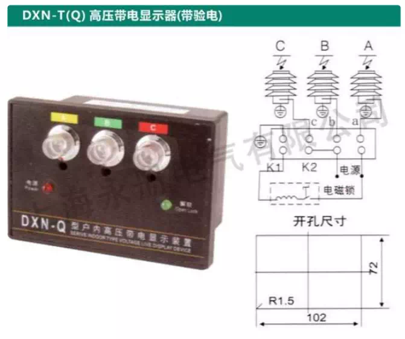
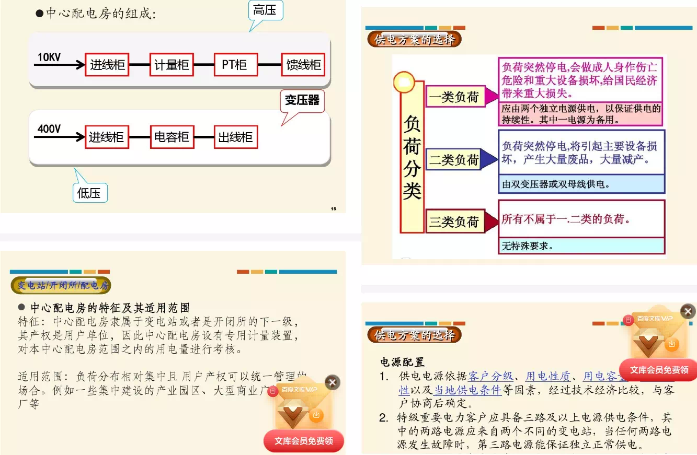
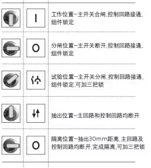
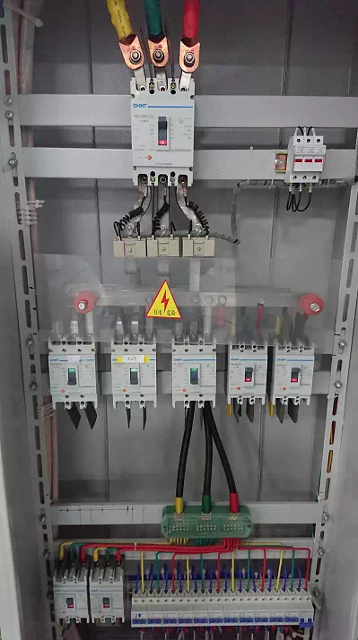
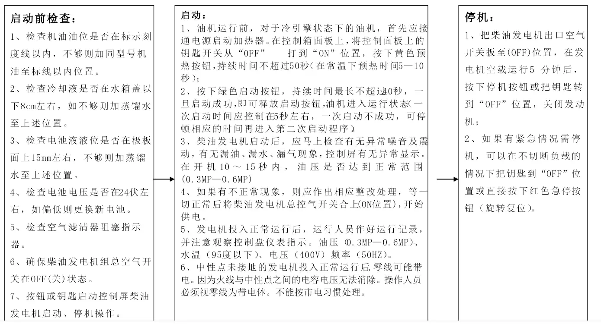
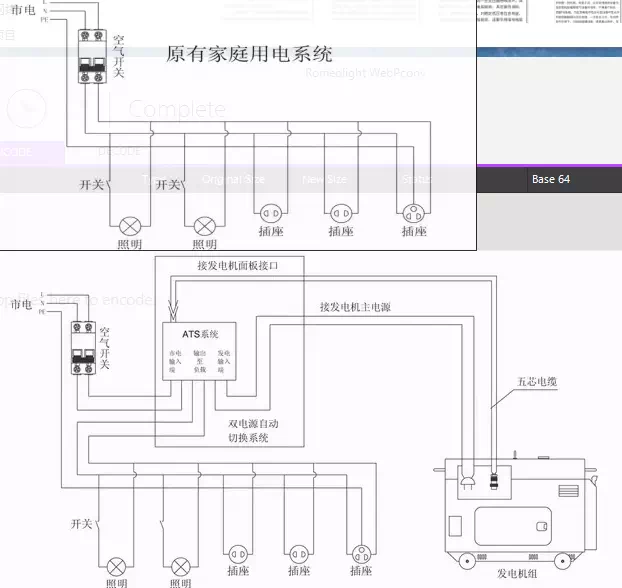
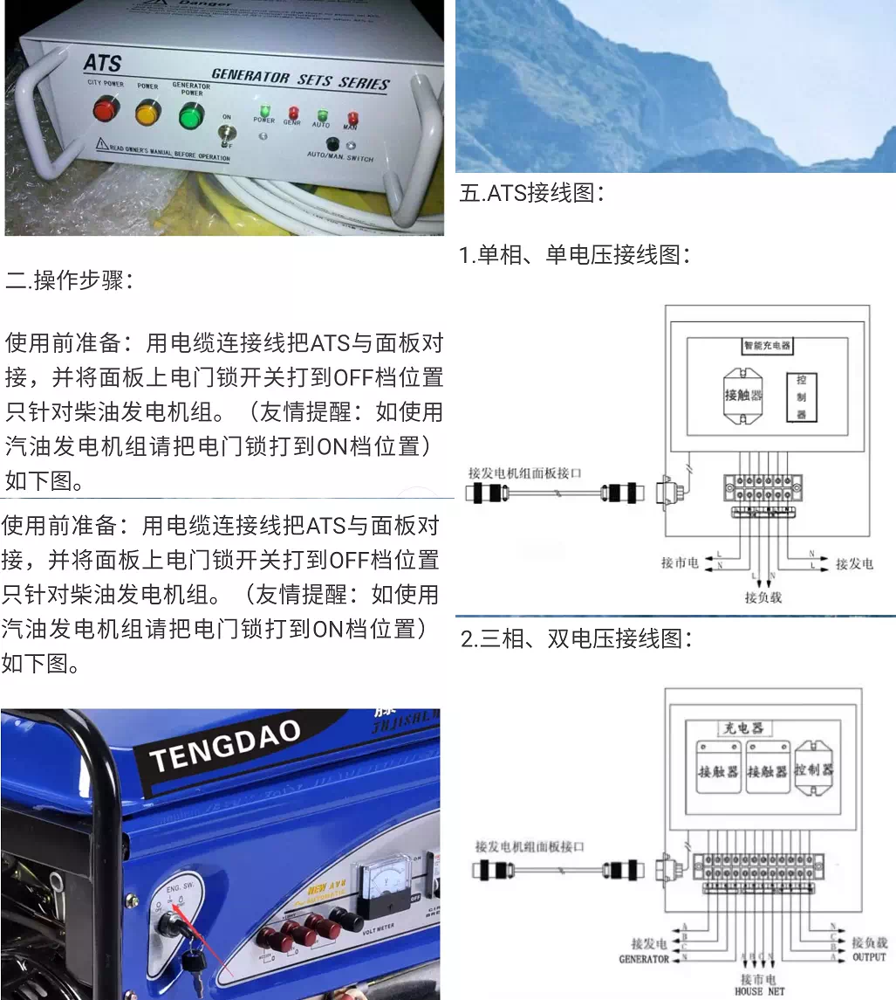

一类负荷 二类负荷 三类负荷 电容器配置原则：变压器容量的1/3。 高压带电显示器  高压带电显示器常用于高压开关柜内，作 柜子是否带电的指示；该装置的 原理是根据电容的分压原理引出一个对地 的低压信号，电容就在绝缘子上，电灯 就是显示器，灯亮就是有电，灯灭就是无 电，由于是电容分压引出的电压信号再 求其和后在形成一个回路，因而接地是必 须的。 电容分压原理: 分压电路的实质是为了将较大的输入信号 电压适当衰减，得到一个比输入电压小的 输出电压。在交流电路中，分压电路用于 将输入的交流信号进行适当衰减，采用电 容分压电路就可以实现这一电路功能。 为何要采用电容分压电路呢?因为电阻对 信号存在损耗，而电容在理论上对信号能 量不存在损耗，所以在一些交流信号电路 中，特别是高频信号电路中采用电容分压 电路而不用电阻分压电路。 电容分压器因为相对普通电阻式分压器的 耐压强度大，不易击穿，一般用来测量交 流高压。但由于其频响效应的响应时间值 比电阻分压器大，所以在冲击电压的测量 中比电阻分压器用的少，对于特高冲击电 压的测量经常用阻容分压器。用于测量冲 击电压。在进行高压交流耐压试验时会用 到串联谐振，那么串联谐振中就会用到电 容分压器，它与电抗器产生谐振后会产生 高压。可对高压设备进行高压交流耐压试 验O    工厂突发性停电事故的处理 工厂供配电系统在运行中发生突然停电时，应根 据不同的停电情况做处相应的处理： 1、 如果是由于供电部门的暂时停电。这时总开关 不必拉开，但出线开关应该全部拉开，以免突然来电， 用电设备同时起动，造成符合和电压摞降，影响供电 系统的正常运行。 2、 当两条进行中的一条进线停电时，应立即进行 切换操作，把重要的负荷转移给另一条进线供电。 3、 如果是由于厂内的供配电线路发生故障跳闸时, 应该试送电一次。若试送电不成功，开关再次跳闸， 说明线路上的故障尚未消除，这时应该对线路进行停 电检修。 4、 若是车间内发生停电事故，应首先向用电人员了解故障情况，找出原因。 设备分为几个类型，其中一类设备就是在停电时 将引起设备或人生事故的，如电梯，工厂自动化 保护等，根据设计规范的要求，必须设置不停电 电源或保安电源。一旦停电，上述电源必须立即 投入，对于间隔时间要求小于0.05S的，如使动画 保护等，使用不停电电源(UPS),其余使用柴 油发电机(如电梯等)。 大部分设备停电后不会引起设备和人生事故的， 可以停电。 拉闸停电时候，电工说要先拉开，之 后要合闸一次再拉开，这样有道理 么？ 我们村的电工拉闸断电的时候，总是先拉开，又马上合 上，之后又马上断开。感觉电器收到很大的损害。他那 样做是有道理么，还是规定必须那么做？ 这是电力行业一种不成文的规定，意思是提醒用 户要停电了。 这是农村电工的规矩，表示是由电工切断电源。 并非跳闸或线路故障 送电也是，先合上…再拉开一再合上。 柴油发电机    柴油机发电机的启动，到正常功率输出，即使一 切是需要正常也需要几分钟时间，这段时间是没 有任何电源的，对于及其重要的系统，比如重要 的电脑服务器，重要的监控设施，手术室照明， 危重病房的急救设备等，必须用大功率的ups做后 备电源。ups的反应相当灵敏，电源接续在瞬间完 成，基本可以理解为无缝接续，因为是蓄电池做 储备电源的，所以缺点是功率不能做的太大，可 以顶替的时间也很有限，所以一定要选最重要 的，功率不是太大的设备，用ups做后备电源。 1.拧松喷油泵上的放气螺钉，用燃油手泵排除燃 油系统内的空气，同时将调整控制手柄固定在适 宜启动转速的油门位置。 2. 按下启动按钮，使柴油机启动，如10秒（最多1E 秒） 柴油机仍不能着火启动，则应待1分钟后再作第二 次启动，若连续三次仍无法启动则应检查并找出 故障原因。 3. 柴油机启动后，应密切注意机油压力表读数（正 常运转时为2.5-3.5kg/cm）,如机油压力表不指 示，应立即停机检查，并检查电流表有无充电指 ZFo 4. 机组启动后，空载转速逐渐增加501000-1200 r/min,（注意不得长时间低速运转），进行柴油机 的预热过程后，再将转速提高到额定转速。待出 水温度达到55°C,机油温度达到45。（：时，才允许 进入全负荷运转。 5. 当机组各仪表指示正常时，即可合上负荷开关 向负载送电，随着机组负荷的变化，若频率和电 压不在规定范围内，应及时调整频率和电压，使 其保持额定值，严禁机组在低转速情况下带负 荷，以免损坏设备。 6. 机组投入正常运转后，应随时注意观察水温、 油温、油压的变化以及功率表、频率表、电流 表、电压表的读数